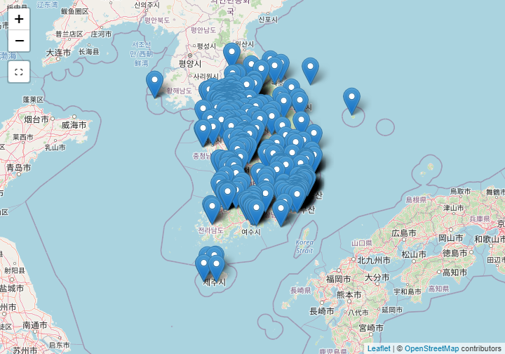
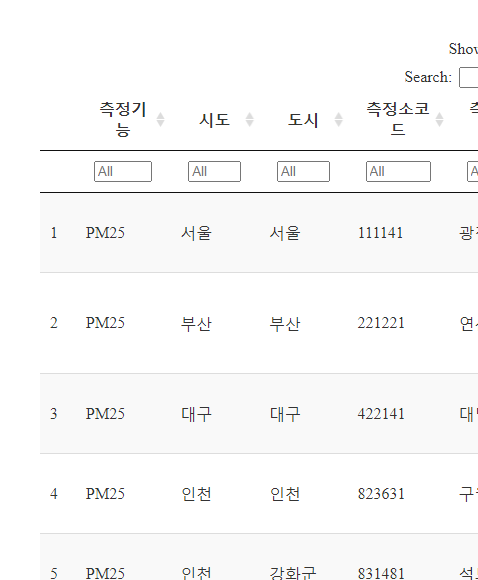

xwMOOC 데이터 저널리즘
측정소 위치 - 대한민국
1. 공기 불평등 민주화
공기질이 삶의 질에 영향을 지대하게 미친다. 깨끗한 공기는 건강과 직결된다. 공기 불평등과 투쟁을 선언한 OpenAQ(Open Air Quality) “2018-01-29” 기준 64개국에 설치된 8,254개 측정솔ㄹ 통해 155,673,930 공기품질 측정값을 수집하여 제공하고 있다.
2. 대한민국 측정소 현황
공기질 측정소 현황은 한국환경공단 Air Korea 홈페이지 통계정보 → 대기환경 연월보에서 대기환경 연보 최신 2016년 다운로드 받으면 구할 수 있다. 데이터가 깔끔(tidy)하지 않은 더러운(messy) 형태라 tidyverse 다양한 기능을 활용하여 정제작업을 거친다.
# 0. 환경설정 ------
library(tidyverse)
library(readxl)
library(purrr)
library(xts)
library(leaflet)
library(crosstalk)
library(DT)
# 1. 데이터 가져오기 -----
loc_dat <- read_excel("data/air_korea_2016/부록14.대기오염측정망 제원_170927.xls", sheet="2016년", skip=4)
names(loc_dat) <- c("시도", "도시", "측정소코드", "측정소명", "주소", "longitude_DMS", "latitude_DMS", "비고")
# 2. 데이터 변환 -----
대기_df <- loc_dat %>%
filter(row_number() <= 281) %>%
mutate(측정기능 = "도시대기")
도로_df <- loc_dat %>%
filter(row_number() >= 287,
row_number() <= 326) %>%
mutate(측정기능 = "도로변대기")
배경농도_df <- loc_dat %>%
filter(row_number() >= 330,
row_number() <= 334) %>%
mutate(측정기능 = "국가배경농도")
교외대기_df <- loc_dat %>%
filter(row_number() >= 340,
row_number() <= 358) %>%
mutate(측정기능 = "교외대기")
중금속_df <- loc_dat %>%
filter(row_number() >= 364,
row_number() <= 421) %>%
mutate(측정기능 = "대기중금속")
광화학_df <- loc_dat %>%
filter(row_number() >= 427,
row_number() <= 446) %>%
mutate(측정기능 = "광화학오염")
유해물질_df <- loc_dat %>%
filter(row_number() >= 451,
row_number() <= 483) %>%
mutate(측정기능 = "유해대기물질")
산성강하_df <- loc_dat %>%
filter(row_number() >= 489,
row_number() <= 528) %>%
mutate(측정기능 = "산성강하물")
대기오염집중_df <- loc_dat %>%
filter(row_number() >= 534,
row_number() <= 539) %>%
mutate(측정기능 = "대기오염집중")
PM25_df <- loc_dat %>%
filter(row_number() >= 545,
row_number() <= 579) %>%
mutate(측정기능 = "PM25")
종합대기_df <- loc_dat %>%
filter(row_number() >= 585,
row_number() <= 599) %>%
mutate(측정기능 = "종합대기")
# 3. 데이터 취합 -----
tmp <- mget(ls(pattern="_df"))
air_df <- map_df(tmp, bind_rows)
# 4. 데이터 정제 -----
air_df <- air_df %>%
filter(측정소명 != "측정소명",
!is.na(측정소명)) %>%
mutate(시도 = na.locf(시도),
도시 = na.locf(도시),
측정소코드 = na.locf(측정소코드),
측정소명 = na.locf(측정소명))3. 측정 기능별 측정소 위치 시각화
총 12 개 기능을 갖는 다양한 공기품질 측정소가 전국에 산재하여 있다. 하지만, 측정소 위치가 도분초로 되어 있어 이를 도로 변환하는 과정을 거친다.
그리고 나서, crosstalk 기능을 추가하여 leaflet에서 공기품질 측정기능별로 측정소 위치를 파악할 수 있도록 작업한다.
# 1. 데이터 정제: 도분초 --> 도 변환 -----
air_df <- air_df %>%
tidyr::separate(longitude_DMS, into=c("경도_도", "경도_분", "경도_초"), sep=" ") %>%
tidyr::separate(latitude_DMS, into=c("위도_도", "위도_분", "위도_초"), sep=" ") %>%
mutate(longitude = as.numeric(경도_도) + as.numeric(경도_분)/60 + as.numeric(경도_초)/3600) %>%
mutate(latitude = as.numeric(위도_도) + as.numeric(위도_분)/60 + as.numeric(위도_초)/3600)
# 2. 공간정보 시각화 -----
## 2.1. 공유 데이터
air_sd <- SharedData$new(air_df)
## 2.2. 제어
filter_checkbox("측정기능", "대기오염측정망 제원", air_sd, ~측정기능, inline = TRUE)## 2.3. 공간 정보 시각화
leaflet(data = air_sd) %>%
addProviderTiles(providers$OpenStreetMap) %>%
addMarkers(popup = ~ as.character(paste0("<strong>", paste0("측정소명: ", 측정소명), "</strong><br><br>",
"-----------------------------------------------------------<br>",
"· 측정기능: ", 측정기능, "<br>",
"· 시도: ", 시도, "<br>",
"· 도시: ", 도시, "<br>",
"· 주소: ", 주소, "<br>"
))) 
3. 측정 기능별 측정소 위치 상세
층정 기능별 측정소 상세정보를 표로 살펴보자.
air_df %>%
select(측정기능, 시도, 도시, 측정소코드, 측정소명, 주소, 비고,
경도=longitude, 위도=latitude) %>%
DT::datatable(filter = "top") %>%
formatCurrency(c("경도", "위도"), currency="", digits=6)